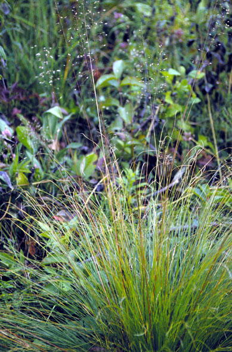
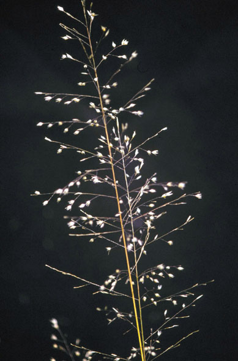
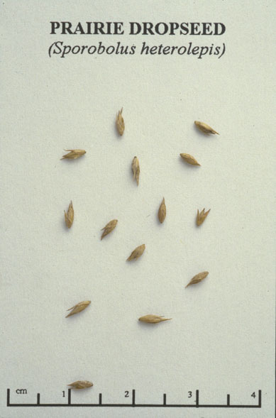

Sporobolus Heterolepis
Family: Poaceae
Prairie/Northern Dropseed
Swink/Wilhelm #10


Click to view larger photo
FLOWERING: Late July - August
SEED TIMING: October
HABITAT: Mesic to wet mesic prairie. Also in open savanna
DIAGNOSTIC FEATURES: 2 - 3 feet high. This grass grows as a short, compact, tufted grass grass with individuals clearly separated. Each clump forms a fountain of fine, long, narrow blades from which arise well-developed, airy panicles of florets and seeds. Each fountain is about 25 to 30 inches in diameter. The leaves tend to brown on the ends. The scent of Prairie Dropseed has been likened to buttered popcorn or hot wax.
TO PICK: Seeds may be stripped from stalk when ripe. Each floret will form a single, shiny, round, light-tan seed